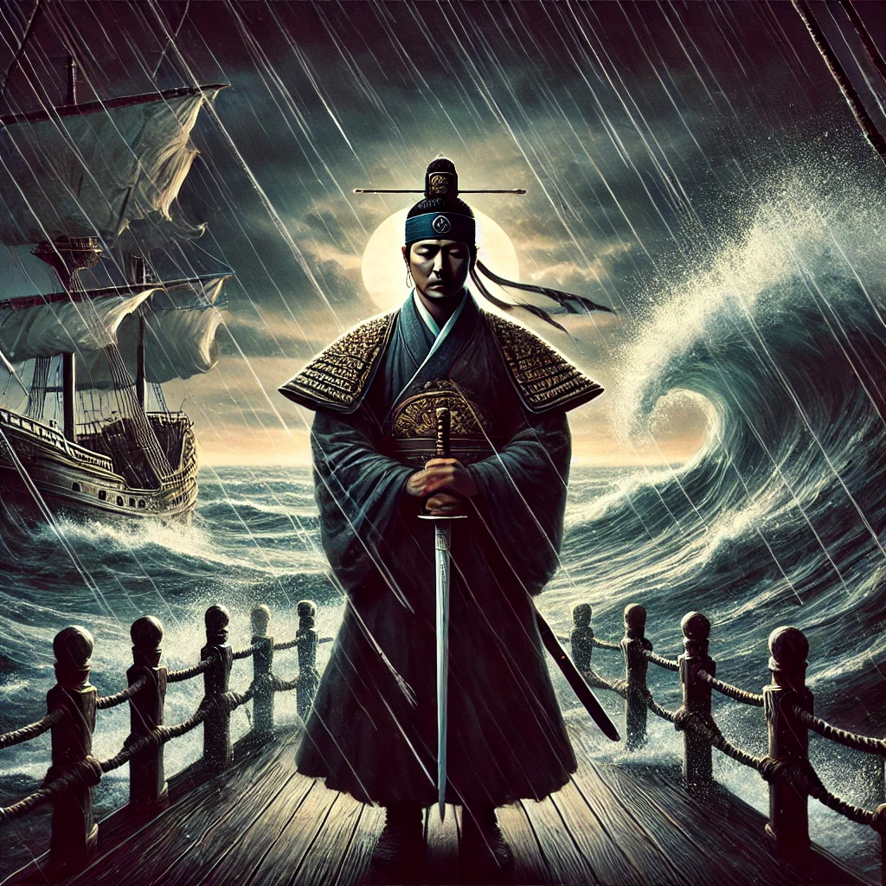

칼의 노래
목차
작가
김 훈
출판일
2022년
감상평에 대한 AI그림
김훈 특유의 간결하고 힘있는 필체가 맘에 들었다.
이순신 장군의 내면을 깊이 이해하고자 했던 작가의 의도가 엿보였으며, 난중일기를 바탕으로 서술하여 사실적인 묘사가 작품을 더 신뢰하게 만들었다.
아버지의 입장과 충신의 입장을 가지고 난세를 극복해 나가는 모습을 보았을 때, 과연 나라면 어떻게 했을까 하는 생각을 계속 하게 되었다.

감상평에 대한 AI평가
이 감상평은 다음의 감정을 중심으로 구성되어 있습니다
✨감탄과 경외: 김훈 작가의 간결한 필체와 사실적인 묘사에 감탄하며, 작품에 대한 신뢰를 표현하고 있습니다.
✨공감과 내면적 성찰: 이순신 장군의 인간적인 면모와 난세를 극복하는 모습에서 자신의 상황에 대입하여 고민하는 공감의 감정이 드러납니다.
✨진지함과 역사적 책임감: 작품을 통해 역사적 인물의 고뇌를 이해하려는 진지함과 함께, 스스로의 선택을 성찰하려는 태도가 담겨 있습니다.
이 감상평은 깊은 존중과 성찰, 그리고 역사적 책임감을 느끼게 하는 감동적인 글입니다.